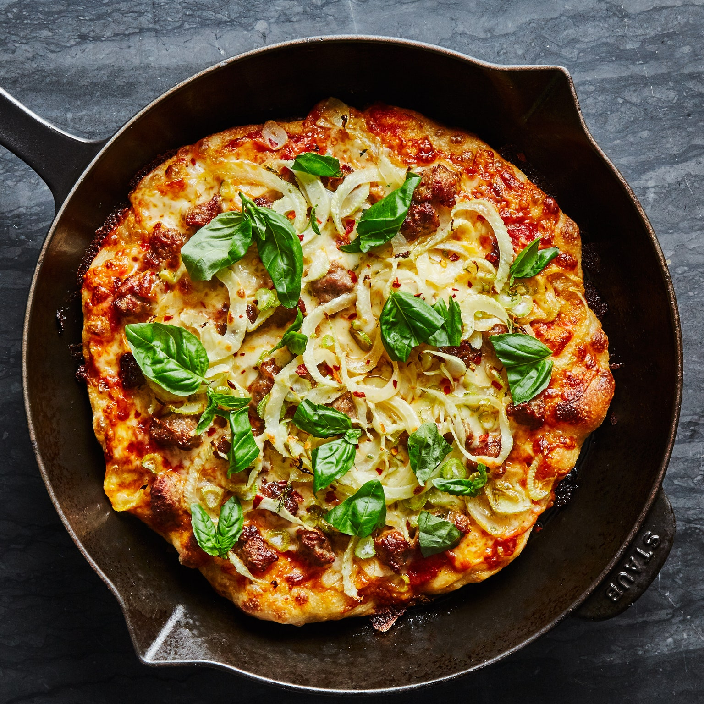

Cast-Iron Pizza with Fennel and Sausage

Description
This pizza recipe from Claire Saffitz at Bon Appetit has become the only technique I use to make pizza at home. It is incredibly tasty while also being extremely easy to put together, and it doesn't leave the kitchen a huge mess.
Pizza dough is usually sold as a 1-lb. ball. You only need 12 oz. for this cast-iron pizza recipe; tear off 4 oz. for making garlic knots. We used a 10" pan, so if yours is bigger, use a bit more dough. Cooking sausage in the pan before adding the dough infuses the crust with porky flavor.
Ingredients
- 12 oz. store-bought pizza dough, room temperature
- 5 Tbsp. extra-virgin olive oil, divided
- 8 oz. sweet Italian sausage, casings removed
- Kosher salt
- ⅓ cup prepared marinara
- ¾ cup coarsely grated low-moisture mozzarella
- ½ small fennel bulb, very thinly sliced
- 3 garlic cloves, very thinly sliced
- Crushed red pepper flakes and torn basil leaves (for serving)
Steps
- Place a rack in top-most position of oven; preheat to 475°. Place dough on a work surface; drizzle with 1 Tbsp. oil, turning to coat. Stretch out to a 10" round and cover loosely with plastic wrap.
- Heat 1 Tbsp. oil in a large cast-iron skillet over medium. Cook sausage, breaking up into small pieces with a wooden spoon, until browned in spots and cooked though, 5-8 minutes. Transfer sausage to a small bowl.
- Remove skillet from heat and carefully lay dough inside (use spoon to help you extend dough all the way to the edges). Season with salt, then spread marinara over entire surface of dough. Top with mozzarella, then fennel, garlic, and cooked sausage. Drizzle with another 2 Tbsp. oil. Peek underneath the crust—the bottom should be golden brown and crisp from residual heat in the skillet. If it’s not, set over medium-low and cook until crust is golden brown, about 3 minutes.
- Transfer skillet to oven and bake pizza on top rack until crust is golden brown around the edges and cheese is browned in spots and bubbling all over, 10–14 minutes. Let cool 5 minutes, then top with red pepper flakes and basil. Sprinkle with more salt and drizzle with remaining 1 Tbsp. oil.